阅读词表
| 词条 | 拼音 | 类型 | 说明 |
|---|---|---|---|
| 盘庚 | pán gēng | person | 商王名，以迁都殷地著称。 |
| 祭祀坑 | jì sì kēng | concept | 用于祭祀或埋藏祭品的坑穴。 |
| 殷墟 | yīn xū | site_or_culture | 晚商都邑遗址，甲骨卜辞的重要出土地。 |
| 人祭 | rén jì | concept | 以人作为祭品的祭祀行为。 |
| 乃 | nǎi | text | 古文代词或连词，文中多作你们的、于是等义。 |
| 墓道 | mù dào | concept | 大墓中通往墓穴的斜坡或通道。 |
| 汝 | rǔ | text | 古文第二人称代词，你、你们。 |
| 殉人 | xùn rén | concept | 陪葬或随葬的人。 |
| 椁室 | guǒ shì | artifact | 墓葬中放置棺木的木构外室。 |
| 朕 | zhèn | text | 古文第一人称代词，后世专作皇帝自称。 |
| 奠基 | diàn jī | concept | 建筑开始时的基础工程或相关仪式。 |
| 二层台 | èr céng tái | concept | 墓室内用于放置随葬品或殉人的台阶状结构。 |
| 高祖 | gāo zǔ | person_or_deity | 商人祭祀体系中的远祖称谓。 |
| 族邑 | zú yì | concept | 以部族为单位聚居形成的城邑或聚落。 |
| 髋骨 | kuān gǔ | rare_word | 骨盆两侧的骨，文中指用于占卜的人体髋骨。 |
| 铜甗 | tóng yǎn | bronze_item | 青铜甗，古代蒸食器。 |
| 【奚戌】 | xī | manual | 无法用现有字符准确录入的古文字占位写法；文中指以钺砍首的杀祭字形，经手工校订确认保留。 |
| 丕 | pī | text | 古书常见虚词或副词，有“大”等义。 |
| 铜戈 | tóng gē | bronze_item | 青铜戈，商周常见兵器。 |
| 下颌骨 | xià hé gǔ | concept | 下颚骨，斩首痕迹常见部位。 |
| 王亥 | wáng hài | person | 商族先公，文中作为“高祖”的可能所指。 |
| 先妣 | xiān bǐ | person_or_deity | 已故女性祖先。 |
| 尚书 | shàng shū | text | 儒家经典之一，文中引用《盘庚》篇。 |
| 先后 | xiān hòu | text | 《盘庚》引文中指已故先王。 |
| 曷 | hé | text | 古文疑问词，为什么、何。 |
| 迪 | dí | text | 古文动词，有行、进用、遵循等义。 |
| 伐 | fá | text | 甲骨卜辞中常见的砍头献祭方式名称。 |
| 斧钺 | fǔ yuè | artifact | 斧与钺，文中用于描述砍首祭祀的器具。 |
| 夯筑 | hāng zhù | concept | 用夯打方式筑成墙体或台基。 |
| 人殉 | rén xùn | concept | 以人随葬或陪葬的行为。 |
| 灰坑 | huī kēng | concept | 遗址中含灰土、废弃物或祭祀遗存的坑穴。 |
| 忱 | chén | text | 诚心、真实心意。 |
| 胥 | xū | text | 古文副词或代词，有相互、皆等义。 |
| 肆 | sì | text | 古文连词，于是、所以。 |
| 铜爵 | tóng jué | bronze_item | 青铜酒器爵。 |
| 铜鼎 | tóng dǐng | bronze_item | 青铜鼎，礼器或炊器。 |
| 窖穴 | jiào xué | concept | 地下储藏坑穴。 |
| 燎祭 | liáo jì | concept | 焚烧祭品以祭祀神灵的方式。 |
| 四墓道 | sì mù dào | concept | 王陵中四条墓道的墓葬形制。 |
| 颈椎骨 | jǐng zhuī gǔ | concept | 颈部椎骨，文中用于判断斩首方式。 |
| 上颌骨 | shàng hé gǔ | concept | 上颚骨，文中用于描述斩首痕迹。 |
| 牲祭坑 | shēng jì kēng | concept | 埋葬动物牺牲的祭祀坑。 |
| 【它攴】 | 读音待考 | manual | 《翦商》用部件组合表示的未编码甲骨文字形；指一种肢解祭法。读音尚未可靠核定，不与“𢻫”混同。 |
| 嵗 | suì | manual | “岁”的异体字，文中用于祭名；经手工校订确认保留。 |
| 契 | xiè | person | 商族传说中的始祖。 |
| 妇妌 | fù jìng | person | 武丁王的一位夫人，文中认为M260可能是其墓葬；妌读第四声jìng（ㄐㄧㄥˋ），传统反切为“疾政切”。 |
| 暨 | jì | text | 古文连词或动词，有与、及、到等义。 |
| 罔 | wǎng | text | 古文否定词，无、不。 |
| 戕 | qiāng | text | 古文动词，伤害、残害。 |
| 绥 | suí | text | 古文动词，安抚、安定。 |
| 钦念 | qīn niàn | text | 古文词组，敬慎思虑。 |
| 瘳 | chōu | text | 古文词，病愈、消除，文中见“曷瘳”。 |
| 猷 | yóu | text | 计谋、谋划，也可作道理。 |
| 宄 | guǐ | text | 古文词，内乱或作恶之人，文中见“奸宄”。 |
| 劓 | yì | text | 古代割鼻刑，文中对应盘庚威胁中的刑罚。 |
| 殄灭 | tiǎn miè | text | 灭绝、消灭。 |
| 俾 | bǐ | text | 古文动词，使、让。 |
| 笃敬 | dǔ jìng | text | 诚笃恭敬。 |
| 铜箧 | tóng qiè | bronze_item | 青铜箧，文中为王陵殉人随葬铜器。 |
| 铜觚 | tóng gū | bronze_item | 青铜觚，古代饮酒器。 |
| 卜骨 | bǔ gǔ | artifact | 用于占卜的兽骨。 |
| 水牛 | shuǐ niú | concept | 商人畜牧和祭祀中涉及的家畜。 |
| 腰坑殉狗 | yāo kēng xùn gǒu | concept | 墓穴腰部小坑中埋狗的商人葬俗。 |
| 肩胛骨 | jiān jiǎ gǔ | concept | 动物或人的肩部骨骼，常被加工为卜骨。 |
| 东下冯商城 | dōng xià féng shāng chéng | 项目词典 | 山西夏县早商城址，文中讨论其仓储区。 | 山西夏县早商城址。 |
| 偃师商城 | yǎn shī shāng chéng | 项目词典 | 商代早期城址，位于二里头以东。 |
| 夯土地基 | hāng tǔ dì jī | 项目词典 | 夯土筑成的建筑基础。 |
| 岳石文化 | yuè shí wén huà | 项目词典 | 山东地区龙山以后、商代以前的考古文化。 |
| 甲骨卜辞 | jiǎ gǔ bǔ cí | 项目词典 | 商代刻写在甲骨上的占卜文字。 | 刻写在龟甲兽骨上的占卜文字。 | 刻写在甲骨上的占卜记录。 | 刻写在龟甲兽骨上的占卜辞句。 |
| 郑州商城 | zhèng zhōu shāng chéng | 项目词典 | 商代早期大型城址。 |
| 东下冯 | dōng xià féng | 项目词典 | 晋南地区与二里头时期相关的考古文化类型。 |
| 周公旦 | zhōu gōng dàn | 项目词典 | 周初政治家。 | 西周初年政治家，文中指其取缔人祭风俗。 |
| 宫殿区 | gōng diàn qū | 项目词典 | 都邑中宫殿和王室活动集中的区域。 |
| 小双桥 | xiǎo shuāng qiáo | 项目词典 | 郑州西北中商时期重要遗址。 |
| 王陵区 | wáng líng qū | 项目词典 | 王室墓葬集中的区域。 | 王室墓葬和祭祀坑集中的区域。 |
| 红烧土 | hóng shāo tǔ | 项目词典 | 经火烧后变红变硬的土，常见于考古遗迹。 |
| 老牛坡 | lǎo niú pō | 项目词典 | 西安附近商代遗址，文中涉及商人据点和人祭。 | 陕西西安商代遗址。 |
| 铜礼器 | tóng lǐ qì | 项目词典 | 用于礼仪或祭祀的青铜器。 |
| 顾颉刚 | gù jié gāng | 项目词典 | 现代历史学家，“古史辨”学派代表人物。 | 现代史学家，曾研究《周易》爻辞中的故事。 |
| 上帝 | shàng dì | 项目词典 | 商周宗教中的最高神。 |
| 下颌 | xià hé | 项目词典 | 下颌部位。 |
| 人牲 | rén shēng | 项目词典 | 被用于祭祀的人。 | 被用于祭祀或献祭的人。 | 被杀用于祭祀的人。 |
| 俯身 | fǔ shēn | 项目词典 | 身体向前伏下。 |
| 偃师 | yǎn shī | 项目词典 | 今河南洛阳附近地名，二里头遗址所在地。 |
| 儒家 | rú jiā | 项目词典 | 以孔子思想及相关经典传统为核心的学派。 |
| 卜辞 | bǔ cí | 项目词典 | 甲骨占卜后刻写或记录的辞句。 | 甲骨上记录占卜的文字。 | 占卜时刻写或记录的辞句。 |
| 周公 | zhōu gōng | 项目词典 | 周公旦，武王之弟。 | 周公旦，周初政治家。 |
| 商族 | shāng zú | 项目词典 | 商王朝建立前后的族群共同体。 |
| 商王 | shāng wáng | 项目词典 | 商朝王。 |
| 土著 | tǔ zhù | 项目词典 | 本地原有居民或族群。 |
| 地层 | dì céng | 项目词典 | 遗址中不同时期堆积形成的层次。 |
| 基址 | jī zhǐ | 项目词典 | 建筑物遗留下来的基础位置。 |
| 填土 | tián tǔ | 项目词典 | 填入坑穴或遗迹中的土层。 |
| 大过 | dà guò | 项目词典 | 《易经》卦名，文中列为自身对称的卦。 |
| 夯土 | hāng tǔ | 项目词典 | 把土层层夯实形成建筑基础或城墙的技术。 |
| 始祖 | shǐ zǔ | 项目词典 | 一个族群传说中的最早祖先。 |
| 帝辛 | dì xīn | 项目词典 | 商纣王的王名。 |
| 战俘 | zhàn fú | 项目词典 | 战争中捕获的人。 |
| 捆绑 | kǔn bǎng | 项目词典 | 用绳索等束缚身体。 |
| 杀祭 | shā jì | 项目词典 | 以杀牲或杀人作为祭祀的仪式。 | 通过杀牲或杀人进行的祭祀。 | 通过杀人或杀牲举行的祭祀。 |
| 柱洞 | zhù dòng | 项目词典 | 考古遗迹中柱子留下的洞穴痕迹。 |
| 棺椁 | guān guǒ | 项目词典 | 棺材及外棺。 |
| 殉葬 | xùn zàng | 项目词典 | 以人或物随葬。 |
| 殷商 | yīn shāng | 项目词典 | 商朝后期文化和政权。 | 商代后期以殷墟为中心的商王朝阶段。 |
| 殷都 | yīn dū | 项目词典 | 商朝后期都城区域，今安阳殷墟一带。 | 商朝后期都城区域。 | 晚商都城，通常指安阳殷墟。 |
| 牲祭 | shēng jì | 项目词典 | 以牛、羊、猪、狗等动物作为祭品的祭祀。 |
| 献祭 | xiàn jì | 项目词典 | 把祭品奉献给神灵或祖先。 | 向神灵、祖先等奉献祭品。 |
| 玉簪 | yù zān | 项目词典 | 玉制发簪。 |
| 神权 | shén quán | 项目词典 | 以神灵、祭祀权威支撑的统治权力。 | 以神灵或宗教权威支配社会政治生活的权力形态。 |
| 祭品 | jì pǐn | 项目词典 | 祭祀时献给神灵或祖先的物品。 |
| 繁衍 | fán yǎn | 项目词典 | 逐渐增多、传续后代。 |
| 纣王 | zhòu wáng | 项目词典 | 商朝末代王帝辛。 | 商末王，文中讨论其暴虐和人祭。 |
| 肢解 | zhī jiě | 项目词典 | 将肢体切割分解。 |
| 腰斩 | yāo zhǎn | 项目词典 | 从腰部斩断，古代酷刑或杀戮方式。 |
| 苑囿 | yuàn yòu | 项目词典 | 古代畜养禽兽、种植林木的园地。 |
| 葬俗 | zàng sú | 项目词典 | 丧葬习惯和仪式传统。 |
| 迁徙 | qiān xǐ | 项目词典 | 群体从一地迁移到另一地。 |
| 遗存 | yí cún | 项目词典 | 古代活动留下的遗物、遗迹或现象。 |
| 都邑 | dū yì | 项目词典 | 作为政治中心的大型聚落或城市。 |
| 锐器 | ruì qì | 项目词典 | 带尖刃或锋利边缘的器物。 |
| 颅骨 | lú gǔ | 项目词典 | 头骨，包围脑部的骨骼。 |
| 颈椎 | jǐng zhuī | 项目词典 | 颈部脊椎骨。 |
青铜器词表
| 器名 | 拼音 | 类型 | 说明 |
|---|---|---|---|
| 戈 | gē | bronze_item | 古代横刃长柄兵器。 |
| 甗 | yǎn | bronze_item | 古代蒸食器，上甑下鬲。 |
| 钺 | yuè | bronze_item | 大型斧形兵器或礼器。 |
| 爵 | jué | bronze_item | 古代酒器，也引申为爵位。 |
| 觚 | gū | bronze_item | 古代饮酒器。 |
章节导读札记
| 主题 | 札记 | 操作 |
|---|---|---|
| 暂无章节导读札记 | ||
用户札记
| 类型 | 页 | 内容 |
|---|---|---|
| 暂无用户札记 | ||
原书阅读器页 195原书物理 PDF 页 193印刷页 181
第十章殷都王室的人祭
小双桥遗址代表的“中商”不算长，可能不足百年，有残酷的人祭仪式，有巨大夯土台“周勃墓”，但商朝总体仍呈现衰微不振的迹象。直到从第十九王盘庚迁都殷地，这才算走出中商的低迷。
商王朝前后存续五六百年，殷商大约占了后一半，约两个半世纪，因此学界也称之为“晚商”。殷墟考古比较丰富，出土有大量的商王占卜刻字甲骨，发掘了王宫、王陵和多处商人的族邑及墓地，有属于王族的，也有普通商人族邑社区的。
殷墟保留的人祭活动的数量和种类最多，本章主要介绍殷都王族的生活区和人祭场：王宫（宗庙）区和王陵区。
盘庚王的训诫
后世的迁都往往只是换一座都城，对全国的影响一般不太大；但在国族一体的上古时代，国都是统治者族群最集中的地方，除了那些散布在远方的零星据点，整个统治族群，或者说国家和王朝，都要整体搬走，不仅是王宫，还有所有的商族部落和家支，以及他们的牲畜、家奴。所以，迁都动议充满争论，多数商人并不愿搬迁。
这正是盘庚王当时面临的困境。
儒家经书《尚书》有若干篇历代商王的讲话记录，虽然难免有后人的改编和再创作，但仍有个别篇章基本保存了原貌。其中，最可信，篇幅也较长的是《盘庚》：在这篇讲话中，商人的精神气质和世界观体现得颇为充分。
在商人的观念里，喜怒无常的诸神主宰着人世间，所以为了推动迁都，盘庚的讲话所表达的神权理念非常直白，充满着恐吓和威胁，不仅距离儒家描述的古圣先贤实在太远，也突破了后人对上古时代的想象力。[[fn:1]]
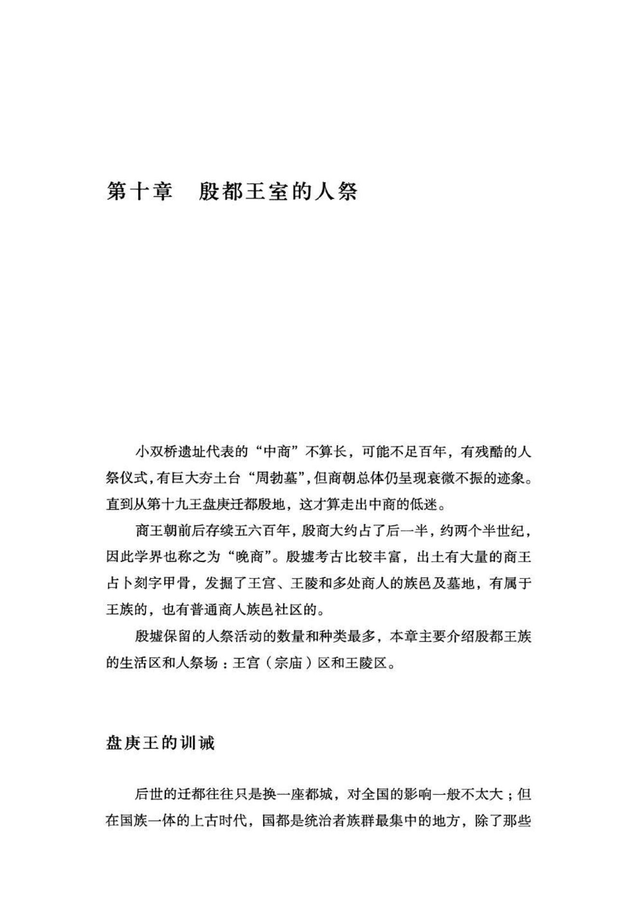
原书阅读器页 196原书物理 PDF 页 194印刷页 182
《盘庚》的行文古奥、艰涩，这是商人的语言特色。但它用的毕竟是和后世一脉相承的文字，就像是听某种汉语方言的谈话，我们还是能基本判断其大意的。
《盘庚》记录了盘庚王的三次迁都讲话，第一次在搬迁之前，后两次是迁徙到新都之后。
第一次，盘庚把贵族召集到王宫庭院做了一番长篇演讲，大意是，迁都之议不容更改，必须执行。讲话一开场，盘庚就引用祖先的权威说，是先王奠定了今天的王朝，如今，商朝不幸遭遇大灾，先王却没有出手相救，正是想让我们离开此地。如果你们心怀不满，不服从我的搬迁命令，我家先王会从天上给你们降下惩罚，他们会说：“为什么敢不服从朕的幼孙！”一旦先王们不开心，从天上惩罚你们，你们就不会有好下场！
……先后丕降与汝罪疾日：“曷不暨朕幼孙有比！” 故有爽德，自上其罚汝，汝罔能迪!
按照商人的宗教观念，历代商王死后会升到天上陪伴上帝，一直监护和保佑着自己的子孙，也就是后代商王，并随时对人间降下福佑或者灾祸。按照同样的逻辑，贵族死后也会进入天界，有一点点干预人间的能力，自然也要保佑自己的后代。人间的分歧，似乎由此将发展成天界争端。面对这个悖论，盘庚必须强调神界的规则：天界的贵族们必须服从诸位先王，不能偏袒自己的子孙；倘若现世的贵族违逆商王，你们的先祖自会大义灭亲。
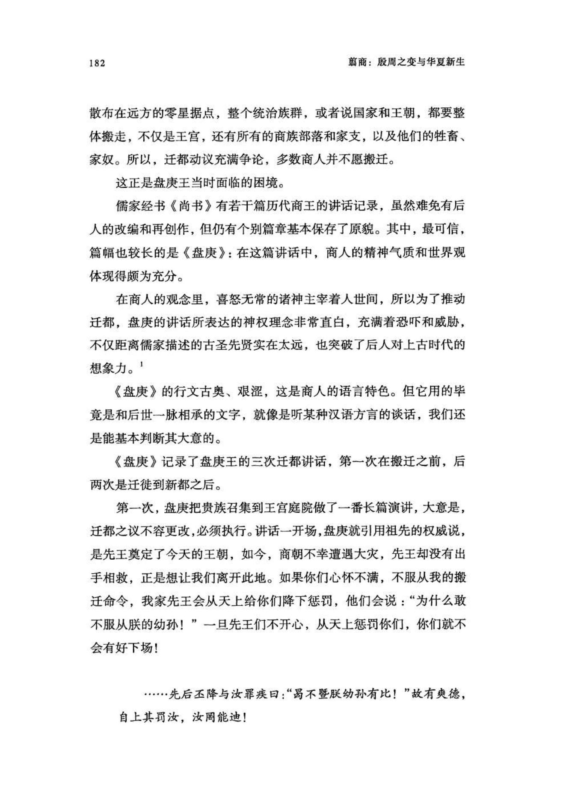
原书阅读器页 197原书物理 PDF 页 195印刷页 183
盘庚说，“当年，我家先王接纳了你们先祖的投靠，所以到今天，你们才能做我（像牲畜一样）养活着的人民。你们心里有恶，会遭到刑罚和杀戮，我先王会（在天界）追究你们的先人，所以你们先人不会出手相救，只会抛弃你们，看着你们死掉！”
古我先后，既劳乃祖乃父，汝共作我畜民。汝有戕，则在乃心。我先后绥乃祖乃父，乃祖乃父，乃断弃汝，不救乃死！
盘庚继续说，现在，那些负责祭祀的人员已经准备好了祭品（贝和玉），“你们的先祖（跟着先王享受了我的祭品）就会告诉我家先王：‘快给我孙子降下刑罚吧！‘我家先王就会给你们降下不祥之灾！”
兹予有乱（司）政同位，具乃贝玉，乃祖先父，丕乃告我高后日：“作丕刑于朕孙！” 迪高后丕乃崇降弗祥。
但在先王降罚之前，盘庚还要动用现世的刑罚杀戮。他用了生活中的事例来警告那些不安心搬迁的人：“你们思想顽固，不体谅我的苦衷，还试图改变我的想法，都是在给自己找麻烦和痛苦。就像大家要坐船过河，就你不愿意，在船里继续捣乱，不安好心，那我就只好把你扔到水里去。你不好好反思，自己生气又有什么用？ ”
汝不忧朕心之攸困，乃咸大不宣乃心，钦念以忱，动予一人，尔惟自鞠自苦。若乘舟，汝弗济，臭厥载。尔忱不属，惟胥以沈。不其或稽，自怒曷瘳？
最后，盘庚恩威并施，用诱导和威胁结束了第一次讲话：“呜呼！如今我跟你们说的，都不要忘了。永远感念我的大恩吧，别做自绝于我的事情。你们只要在自己心里找到公平，就能懂我的道理，老老实实服从。再有不安心、不听话的，想搞点为非作歹的坏事，我会切掉你们的鼻子，然后再杀掉你们全家，一个不留，那样的话，新都城里面就没有你们的子孙后人了！去吧，你们这些活人！现在我就要让你们搬迁，给你们建个长久的家！”
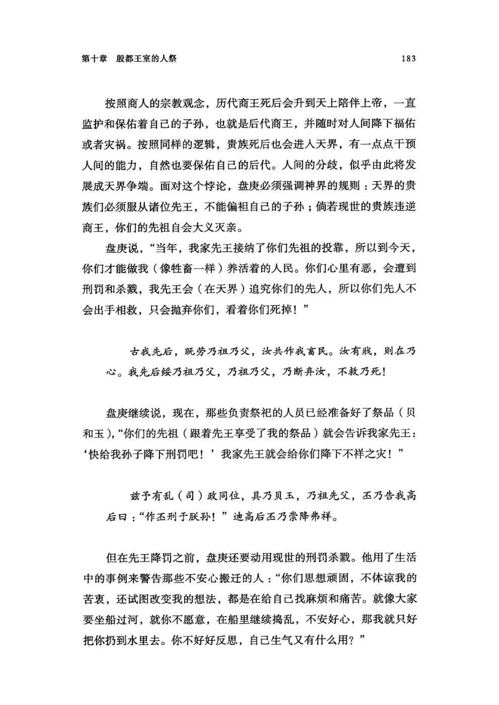
原书阅读器页 198原书物理 PDF 页 196印刷页 184
呜呼！今予告汝不易，永敬大恤，无胥绝远。汝分猷念以相从，各设中于乃心。乃有不吉不迪、颠越不恭、暂遇奸宄，我乃劓、殄灭之，无遗育！无俾易种于兹新邑！往哉，生生！今予将试以汝迁，永建乃家！
迁都大业终于完成。后面两次讲话都发生在新都城，因为意见分歧已经不太严重，所以盘庚发出的威胁少了，鼓动更多一些。他还是拿“上帝”当自己迁都的理由：“你们说我「何苦震动万民搞搬迁？'这并不是我的意思，而是上帝要回报我家高祖的好心，帮我家振兴起来。朕只能虔诚地服从，老实承担你们万民的命运，在新都城永远安家。”
尔谓朕：曷震动万民以迁？肆上帝将复我高祖之德，乱（司）越我家。朕及笃敬，恭承民命，用永地于新邑。
在讲话中，盘庚还特别提到了受上帝重视的“高祖”：“肆上帝将复我高祖之德，乱越我家。”在后世商王的卜辞中，“高祖”一般是指王亥。可能因为王亥曾首次带商族北渡黄河，而盘庚王这次也是向黄河北迁都，所以会重点受到高祖王亥的福佑。
从《盘庚》讲话来看，商王的权威来自天界的上帝，但商王并不和上帝直接沟通，而是由列祖列宗代表上帝干预人间。面聆盘庚讲话的，应该都是商朝高级贵族，但盘庚对他们并没有太尊重的称呼，直呼其为“民”“汝万民”“我民”，还有“众” “汝众”“尔众”。至于王和这些高级“民”的关系，则是畜牧的畜——“汝共作我畜民”，“奉畜汝众”——动辄以杀戮和神灵的惩罚相威胁，少有温情，刻薄寡恩。
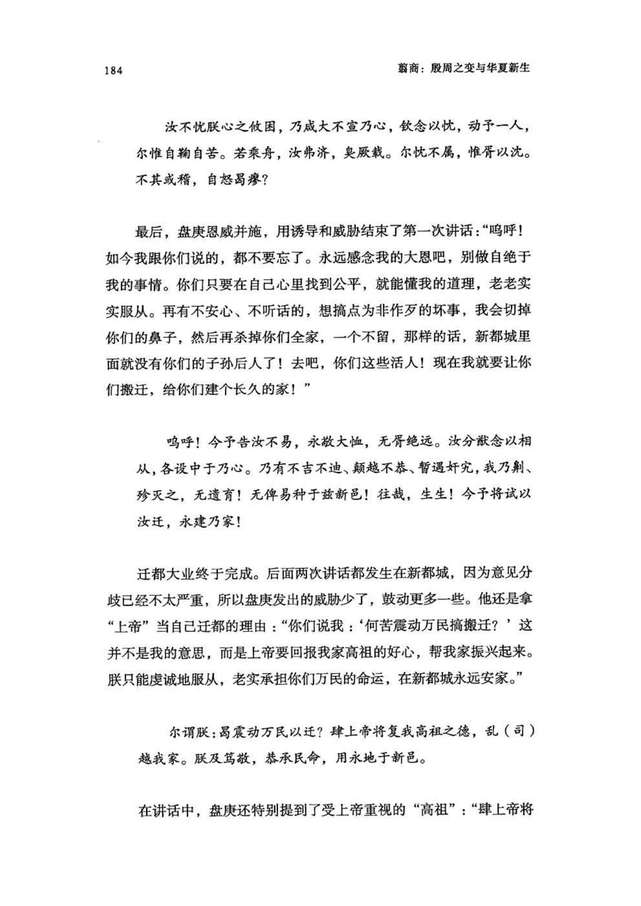
原书阅读器页 199原书物理 PDF 页 197印刷页 185
王还称贵族们为“生生”，直译为“活人”。这也是个提示：生杀予夺的权力在王手里，所以任何人活着都是王的恩赐，再高级的贵族也不例外。
两百多年后，商朝灭亡，当周公旦提出搬迁殷都的要求时，他也将和盘庚王一样，对殷商贵族发布一番动员讲话。而殷都的诞生与毁灭，就在盘庚和周公的这两次讲话之间。
洹北商城半途而废
盘庚从哪里搬迁，目的地又是哪里？《史记•殷本纪》说是从黄河北迁到了河南：“帝盘庚之时，殷已都河北，盘庚渡河南，复居成汤之故居，乃五迁，无定处而事实正好相反，根据现代考古，实是从郑州小双桥迁到安阳殷墟（殷都）。
殷都地处古黄河西北侧，太行山东麓的平原。洹水从太行山流出，向东注入古黄河，而洹水两岸就是殷地。在殷墟甲骨卜辞里，曾出现“殷”的地名，写作“衣”，字形是一件宽领长袍，属于音近的借字；不过它更常见的名称是“大邑商”，在甲骨文中，“大”和“天”通用，所以也被释读成“天邑商”。商族人管自己的都城叫“商”，不管搬迁到何地，这个地名会一直随行。
至于盘庚为何要迁到黄河北的殷地，史书和考古都没有提供解答。《尚书•盘庚》曾提及商人在昔日的都城遭遇过一些困难，不够安定。不过，从考古看，小双桥时期的中商虽然称不上宏大，但并没有什么势力能威胁它，特别是在小双桥的西方与南方，并不存在强大的族群，所以难以解释盘庚为何向东北方向迁徙。
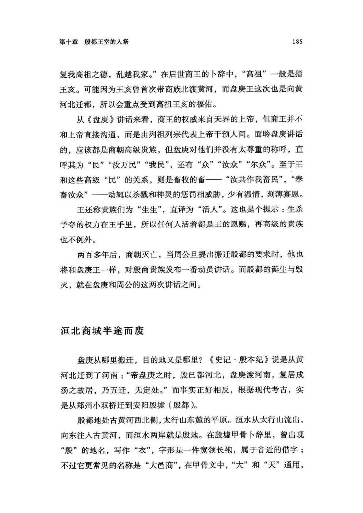
原书阅读器页 200原书物理 PDF 页 198印刷页 186
小双桥都邑有一些来自山东地区的岳石文化元素，这似乎标志着小双桥朝廷和东方有着较为紧密的联系，按理盘庚应迁往山东。但事实却又相反，之后的甲骨卜辞显示，山东地区的土著（东夷）和商朝的关系并不算好。看来，融入小双桥的岳石文化因素并不代表商朝和东方有着一种持久亲密的关系。
也有学者从躲避水患和寻找铜矿等角度寻找迁都原因。[[fn:2]] 确实，殷墟比小双桥地势略高，也远离大河，且西部的太行山还有铜矿；但问题是，满足这些条件的地方还有很多，比如关中盆地的老牛坡商文化遗址以及晋南地区的垣曲和东下冯商城遗址也都远离水患，临近铜矿。
殷墟的考古发掘提供了一条线索：在这个阶段，商人掌握了一种重要的技术——马拉战车，而这种技术可能是从北方传来的。因此，盘庚向北迁都也许是为了更接近马的产地。
上述这些，都是从“理性”层面寻找盘庚迁殷的原因，但在商人的时代，“理性”只是影响决策的一部分原因，还有相当部分是由鬼神和占卜决定的。这些“非理性”因素虽然无法复原，却不能忽略。
洹北商城是盘庚王在洹河北岸规划的一座大型城池，基本是正方形（边长约2200米），夯土城墙底宽十余米，规模超过早商的郑州和偃师商城。显然，盘庚试图重建早商的黄金时代。
洹北商城的王宫区在城内中央偏南，有两座大型宫殿基址，闭合的四合院结构，主殿堂在北面。
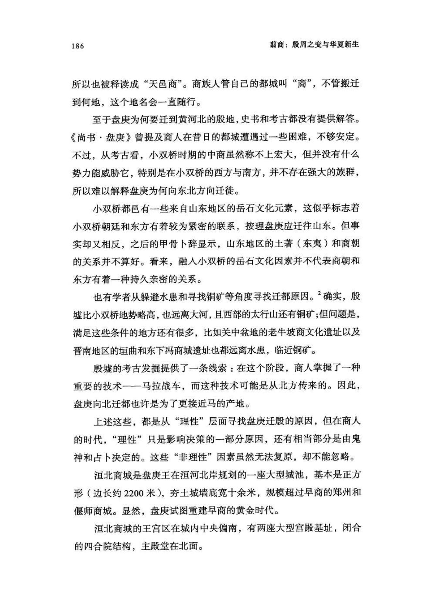
原书阅读器页 201原书物理 PDF 页 199印刷页 187
一号宫殿基址很大，总面积近1.6万平方米（东西长约173米，南北宽约90米），犹如一座标准操场。这座宫殿的规模打破了以往的纪录，之后几百年内也无法被超越。由此亦可见盘庚王当时的野心之大，所以商人贵族乃至民众对迁都的抵触情绪并非毫无道理，毕竟新都和宫廷的建设成本会落到所有商人身上。
宫殿正室内有埋狗的奠基坑，有多座台阶通往庭院，且多数台阶东侧也都挖一座坑，埋一名奠基人。目前发表的简报信息有限，还不清楚到底有多少座坑，以及坑内人的特征。其他的房屋和门房旁边也有奠基或祭祀坑，坑内主要是羊，或者是空坑，发掘者推测，可能是用酒和血祭祀。门房边的奠基坑也埋了一个人。[[fn:3]]
二号基址规模略小，面积约0.6万平方米，目前只发掘了一小部分。它的祭祀坑内没有发现殉人。一口水井中有大量动物残骨，黄牛和水牛都有，黄牛占绝大多数。[[fn:4]]
洹北商城使用的时间不长，很多城墙段落还没有完工，整座城池就被废弃了。然后，商人在洹河南岸营建了新的王宫区，多数族邑聚落也都坐落在洹河以南，这便是后世著名的“殷墟”。只是洹北商城被遗忘了三千多年，直到21世纪才被重新发现。
那么，商人是何时开始搬迁到过河南岸的？从殷墟出土的甲骨卜辞看，最早属于第二十二王武丁时代。武丁是盘庚的侄子，他们中间还有两位商王，盘庚的弟弟小辛和小乙（武丁之父）。所以，洹北商城可能只经历了盘庚、小辛和小乙这三代，时间不超过五十年。
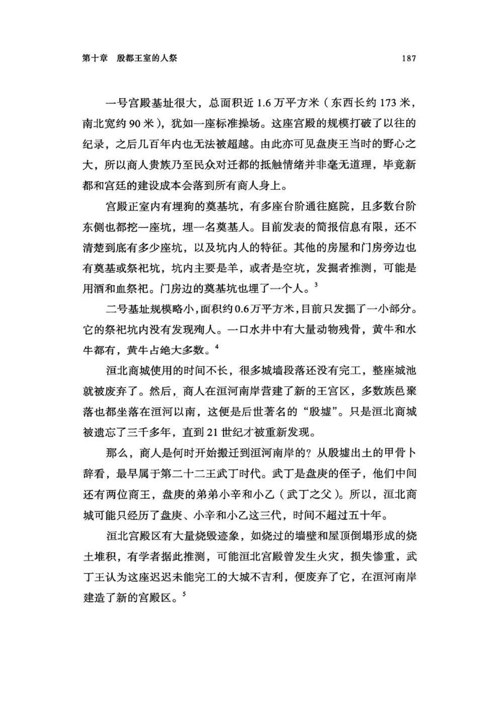
原书阅读器页 202原书物理 PDF 页 200印刷页 188
洹北宫殿区有大量烧毁迹象，如烧过的墙壁和屋顶倒塌形成的烧土堆积，有学者据此推测，可能洹北宫殿曾发生火灾，损失惨重，武丁王认为这座迟迟未能完工的大城不吉利，便废弃了它，在洹河南岸建造了新的宫殿区。[[fn:5]]
洹北商城与殷墟遗址群范围（图）
洹北商城一号宫殿发掘平面图（图）[[fn:6]]
殷墟宫殿区建筑（图）[[fn:7]]
武丁王的新殷都
新宫殿区坐落在洹河弯内侧，今安阳小屯村北，“殷墟博物苑”所在地。
营建新宫殿时，武丁抛弃了之前的“城池”都城模式。他可能不相信商朝都城会受到外来威胁，认为与其耗费庞大的人力夯筑城墙，不如主动对外扩张。武丁规划的宫殿也不再是封闭的大院落，而是若干座彼此独立的大型建筑，皆有厚达1米的夯土地基、木柱框架结构和厚重的夯土墙，足以抵抗地震，且分散的单体结构也更利于防火。
王宫建筑大多面对着洹河和太阳升起的东方，南北狭长。最北端被划为甲区，是商王的主要生活区，有五六座主体殿堂，还有饲养禽鸟的苑囿，可能喻示商人的鸟崇拜信仰。宫廷杂役人员住的小房子则星罗棋布在周边。
在甲区，甲十一宫殿基址最大，南北长46.7米，宽10.7米。最大的木柱安放在圆形铸铜片上，而不是常见的柱础石。夯土中有一枚人头骨，但因为没有挖开宫殿的夯土地基，尚不知道用了多少颗人头奠基。
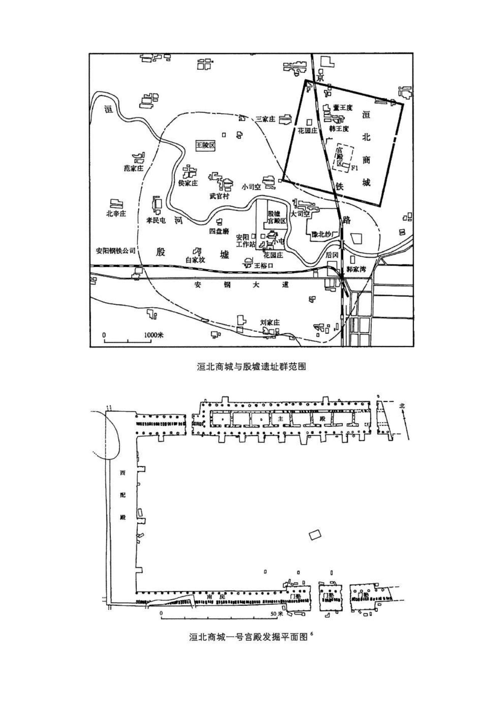
原书阅读器页 203原书物理 PDF 页 201印刷页 189
甲十一西侧是甲十二基址，南北长20.5米，东西宽8.7米。两圈柱洞遗迹显示，这是一座有重檐结构的殿堂。在两个柱洞旁边，各发现一枚头骨，其中一枚是沿耳和鼻砍下来的半截人头。[[fn:8]]
甲区面积不大，南北跨度100米左右。它的南端是乙区，这里殿堂更多，也更宏大，且每座大殿周边都有多座杀祭坑。考古学者推测，乙区是商王的宗庙区，供奉自商族始祖契以来的历代先王和先妣。
最大的祭祀区在乙七基址南侧空地。这里密集排列着100多座祭祀坑，用人数量超过600，还有马车五辆，马和牛数十头，羊和狗过百只。有些坑中埋的是被砍了头的密集尸骨。也有些是单人坑，人牲携带兵器，被摆放成跪坐、手持戈盾造型。殷墟博物苑复原了部分乙区祭祀坑，还加了玻璃顶盖做露天展示，以方便参观者直面商王朝的独特气质。[[fn:9]]
乙区也是商王议事办公的主要场所，因为重大决策需要用甲骨占卜请示历代先王，所以宗庙也是议政堂。有些御用占卜师也住在这里，以随时给商王提供服务。紧挨着人祭区的乙十二殿堂旁边，有一座窖穴YH127，里面堆放着1.7万多片甲骨，主要是龟甲，经过释读，是武丁王时期的卜辞。这里可能是一座卜甲储藏室，过期之后被填土埋藏。甲骨堆里还有一具完整尸骨，发掘者推测是甲骨保管人，最后被“随葬”给了甲骨档案，成为守护窖穴之鬼，保护着这个秘密长达三千多年。武丁王留下的甲骨很多，在殷墟的散布范围也更广，远不止YH127。
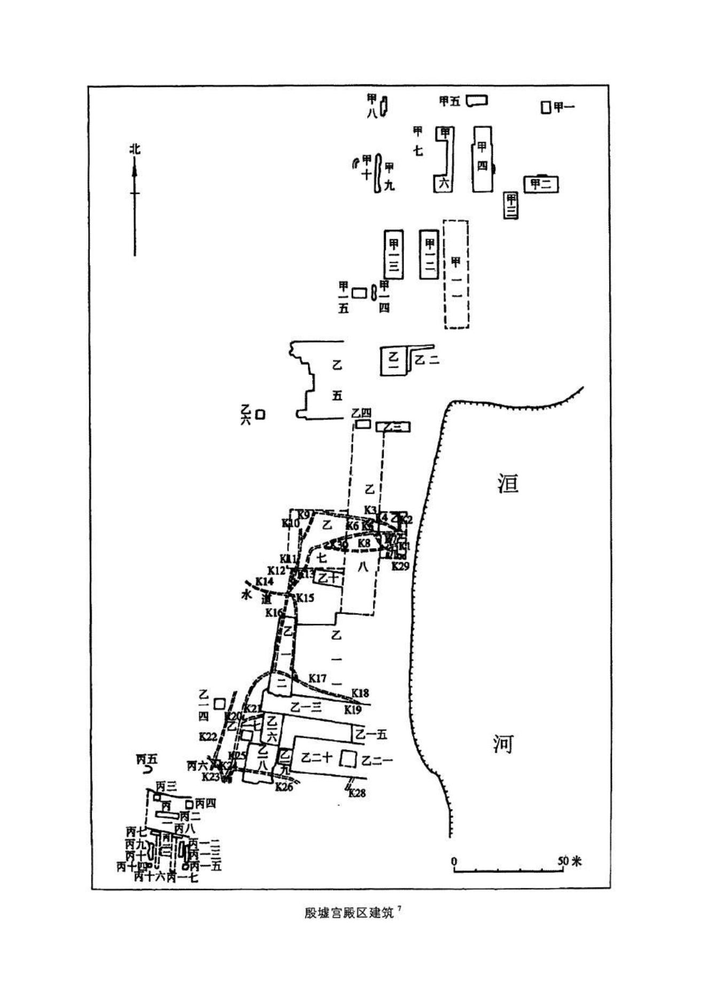
原书阅读器页 204原书物理 PDF 页 202印刷页 190
乙区祭祀坑大都是供奉给先祖的，但王宫区面积有限，几次祭祀就可以用掉这片广场，武丁只好在洹河北岸规划新的王陵区和祭祀区。此后，乙区殿堂的宗教职能减少，功能上逐渐向甲区靠拢。占卜师家族的繁衍也很快，他们向南搬迁了数百米，在今小屯村一带形成了新的占卜师聚落。[[fn:10]]
在乙区西南侧十余米处，是被发掘者称为丙区的部分。这块基址范围很小，方圆不过三十米，而且遗迹很特殊，只有一些窄小的夯土台和祭祀坑。有五座祭祀坑埋有被砍了头的人，其中一座埋有20人，其余四座都是3人；有些祭祀坑埋的是狗和羊；有八座则填满黑色灰烬，混杂着羊骨；还有些是空的。灰烬是焚烧祭品的“燎祭”遗存，空的坑里献祭的应该是酒和血。由此推测，这些窄小的夯土台不是普通建筑，而是献祭的祭台，用来屠杀、分割人和牲畜，摆放祭品。
商王的祭祀有很多种，直接埋入地下的只是一部分。在甲骨卜辞里，商王也常祭祀自然神，有四方风、鸟、河、岳等，对这些神，经常使用燎祭。丙区的祭台和祭祀坑可能主要供奉自然神。[[fn:11]]
乙区和丙区的东南侧，也就是发掘者称为“丁区”的部分，有一组大型建筑，可能是商朝王室的“大学”，我们后文会详细介绍。
商人各族邑聚落星罗棋布在王宫外围，形成直径达五六公里、广阔而松散的“殷墟遗址群”，地跨洹河南北，面积超过30平方公里。
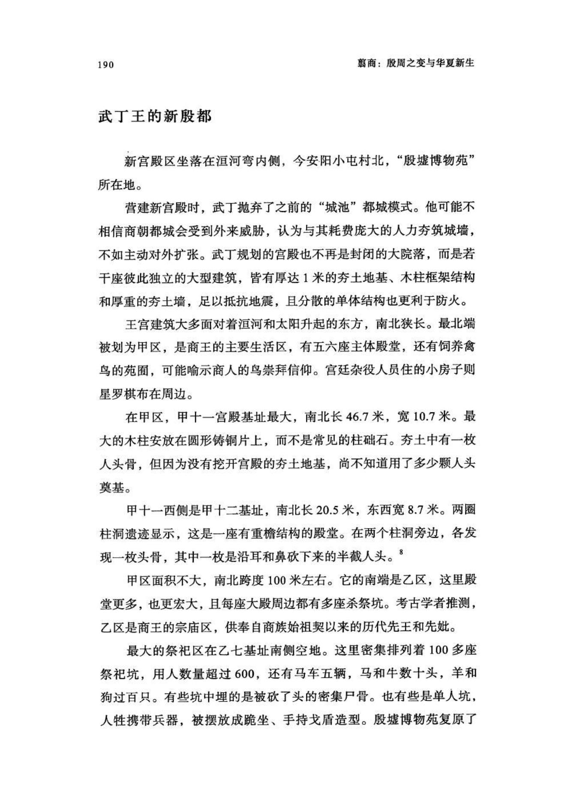
原书阅读器页 205原书物理 PDF 页 203印刷页 191
每座族邑聚落都是一个基本独立的经济单位，周边是自己的农田和牧场，也大都有自己擅长的手工业作坊，如铸铜、制骨、制陶等。此夕卜，肯定还有不容易留下遗迹的产业，如纺织、印染、木器（造车）、皮革和食品加工等。
武丁王建设的殷都使用了200年左右，虽然有过小规模的改建和扩建，但基本格局一直未变，直到商朝终结。
刚对殷墟进行考古发掘时，还没有人意识到殷都如此庞大而松散，毕竟，最初的“殷墟”概念只是小屯村北出土甲骨的王宫区。所以，初期的保护区范围非常有限，甚至安阳市西北郊还被规划为钢铁工业区，结果，大量商代遗址遭到破坏。
在工厂、楼盘、铁路和机场的缝隙中，仍不时有商代族邑被发掘出土，它们普遍用人祭祀、奠基和殉葬。这是商文化，也是中国上古人祭文化最后的“辉煌”。
王陵与殉葬人
宫殿区向西北方5公里外，是殷都王陵区。
从1935年开始，王陵区的大规模考古发掘已发现十多座王级墓葬，墓穴的边长都超过10米，有的甚至20多米，深度也超过10米。这是迄今发现的最古老的王级墓区，有些因地下水涌出而无法发掘。
墓穴在建造过程中，一旦挖得过大过深，运土和安置棺椁等工作就会变得很困难，为此，需要建造缓坡形的“墓道”以方便进出。王陵区的大墓中，四墓道的有八座，双墓道的有三座，单墓道的有两座。[[fn:12]]
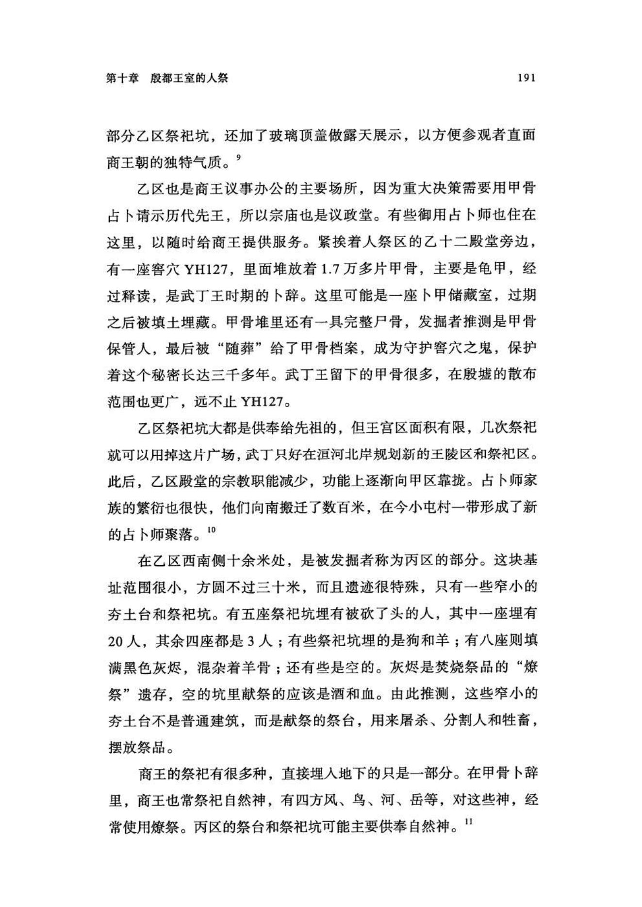
原书阅读器页 206原书物理 PDF 页 204印刷页 192
从空中俯视，四墓道大墓呈十字架造型，其中，M1576的挖掘尚未完工，只挖出部分方形墓穴，没有墓道，也没有埋藏物。有学者推测，它是末代纣王帝辛给自己建造的墓穴，但后因纣王身死国灭，墓穴没有被使用。
这些王级大墓周围，还分布着一些王族显贵的墓。
商人高级墓葬的建设程序是，先挖掘墓穴和墓道，然后在墓穴底部挖出方形的墓室，里面用木料搭建椁室，犹如一座木房子。椁木往往雕花，刷红漆，造型美观，椁室内则放置棺木和最珍贵的随葬品以及墓主最贴身的殉人。墓主入葬后，椁室顶部会盖上木料，接着在墓穴二层台继续放置随葬品和殉人，然后填土，逐层夯筑，直至大墓完成。
有些埋葬在王墓二层台上的殉人地位较高，有自己的棺材，也有青铜兵器和礼器以及玉器随葬，甚至还有属于自己的一两名随葬人。
可惜的是，王陵区所有的高等级墓都遭到严重破坏，不仅随葬品基本被洗劫一空，墓穴结构和棺椁构造也多被挖毁或焚烧，基本无法判断这些王陵属于哪一位商王。
王陵的墓穴和墓道里还残留着大量殉葬尸骨。殉人的程序是：一，先在椁室底部挖若干坑，分别埋入一人或一狗，人多持青铜和玉石兵器，身份是墓穴守卫者。这是商人“腰坑殉狗”葬俗的豪华版本。二，安置完这些殉人和殉狗后，再搭建椁室。三，在墓中各处摆放殉葬人，如棺椁外、墓穴内、墓穴边缘土台和墓道，甚至对墓穴填土夯筑时，也会继续埋入完整或被肢解的殉人。每座王陵的殉葬者至少有数百人，这还是被严重破坏之后的数字。
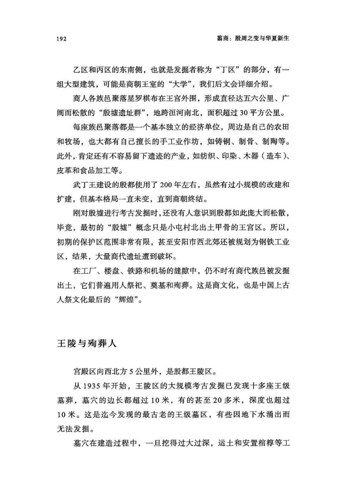
原书阅读器页 207原书物理 PDF 页 205印刷页 193
有些墓穴和墓道因装不下过多尸首，所以会只埋入人头。比如，M1550大墓埋有243枚人头骨，北墓道摆放235枚，南墓道摆放八枚，多数都带着几节颈椎骨，发掘报告认为，这“证明当时是将人头砍下，连皮带骨地埋在夯土中"。[[fn:13]] 这些殉人的尸骨，则被埋入依附于王陵的殉葬坑群：王陵旁有成排的长方形坑，尺寸类似单人墓穴，每座坑里都密集埋有十来具无头尸骨。其他王陵也有类似现象。
在王陵区大墓中，最东端的50WGM1遭受的破坏稍轻一些，还能看出一些基本的墓葬结构。它有南北两条墓道，在王陵区属于规模较小的王级墓葬。椁室内部虽然已经被破坏，但东西二层台上的殉人基本完好：东侧葬17人，其中E9棺随葬铜戈三件，铜箧、铜爵、铜壁和铜觚各一件，以及驾驭马车的铜弓形器一件，说明这位殉人拥有自己的车马。西侧葬24人，其中W8棺随葬铜戈一件，铜鼎一件，铜觎和铜爵各两件，此外，还有玉器和各种小件铜器。发掘者推测，E9和W8分别是东西殉葬队伍的首领。
比较可见，西侧24人共随葬玉器十件，小巧的铜戈三件；东侧17人共随葬玉器五件，厚重实用的铜戈六件。西侧，人骨多腐朽；东侧，人骨多健壮，保存完好。他们可能分属墓主的两种家仆，东侧负责保卫和战斗，西侧负责家务。此外，北墓道内埋了二人、四犬和16匹马，是墓主的出行车马队。
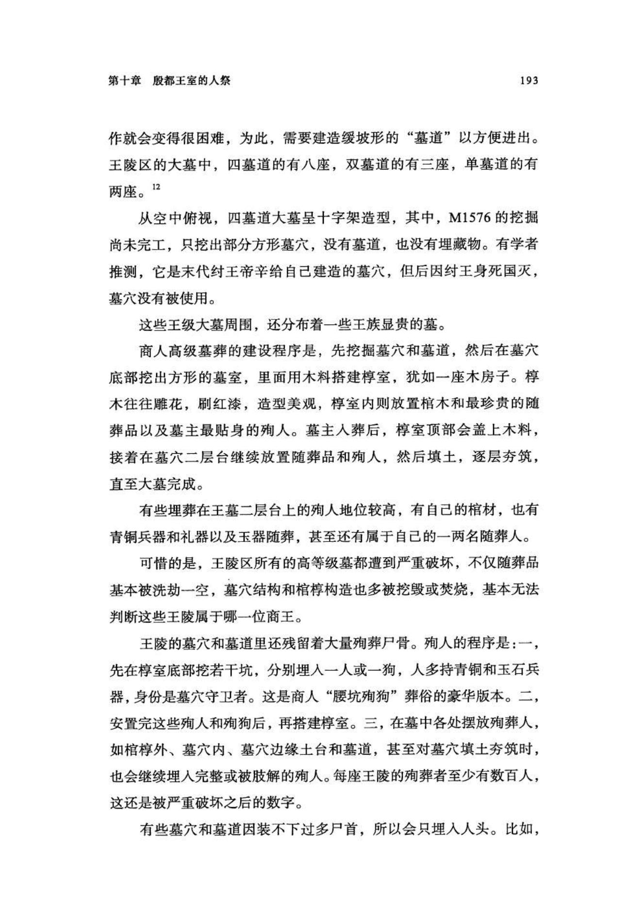
原书阅读器页 208原书物理 PDF 页 206印刷页 194
整座墓发现殉葬者全尸45具，头骨34枚，还有犬、马、猴、鹿以及难以辨别种类的动物骨骼。该墓也在后期被破坏，这只是残存的数量。[[fn:14]] 大破坏前，破坏者在50WGM1墓穴口挖了一个直径6米的破坏坑，向下直达椁室，先是洗劫了所有物品，然后点燃了棺椁，大火烧红的椁室土壁足有2厘米厚。
虽然被严重破坏，有些王陵里还是能发现一些出人意料之物，如巨大的鲸鱼骨头，看来商人与海洋一直有某种联系，只是现存的甲骨文从未记载这些，我们也就无从知晓细节了。
发掘中的王陵区M1550大墓[[fn:15]]（图）
刚发掘完的双墓道大墓50WGM1[[fn:16]]（图）
墓道里成排的人头，每排10个[[fn:17]]（图）
密如繁星的人祭坑
除了王陵下葬时的殉葬者，商王每年都要祭祀历代先祖，而这需要大量人牲。
在王陵区的东半部分，有成排、密集的小型墓坑，里面填埋了多具身首分离的尸骨。1934—1935年，中央研究院的考古队在这里发掘了1221座“小墓”，其中少数是殉葬坑，多数是祭祀坑，但发掘的详细资料一直没有发表。
此后，王陵区又多次发掘出祭祀坑，如1950年、1959年、1976年、1978年，每次都发掘数十甚至上百座，加上已经钻探定位、未经发掘的700多座，累计发现祭祀坑2200座左右。直到2021年，还有新的祭祀坑陆续被发现。
1976年，在50WGM1南侧发掘出191座祭祀坑，被完全破坏、尸骨无存的有22座，局部被破坏的有21座。这次发表的信息稍微多一些，可以据此了解商代王陵祭祀的一些细节。[[fn:18]]
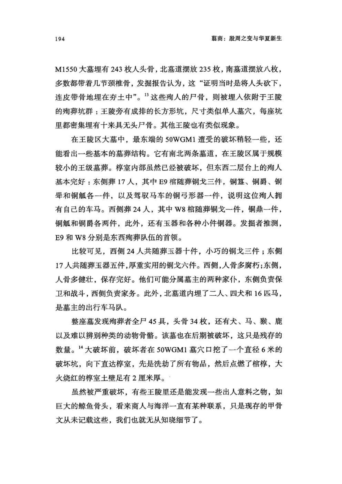
原书阅读器页 209原书物理 PDF 页 207印刷页 195
一，这些祭祀坑分两种：一种南北朝向，占大多数，埋的是斩首的青年男性；另一种，东西朝向，埋的主要是全尸的青年女子和幼儿。从叠压次序来看，东西向祭祀坑要晚一些。根据坑中器物，发掘者推测，南北向坑是武丁王时期的，东西向坑是武丁的儿子祖庚和祖甲，甚至祖甲之子康辛王时期的。总的来说，这些祭祀坑的使用时间跨度近百年。
二，在甲骨卜辞中，砍头献祭多称为“伐”。这是商王献祭时使用最多的方式。就发掘的南北向祭祀坑看，多数砍得颇为草率，“有些人的颈椎上还残留有下颌骨，或上颌骨。在有的下颌骨上亦可以看到刀砍的痕迹”。1959年发掘的祭祀坑也有这种现象：“人骨架…… 存上下颌骨，牙齿俱存，斩杀时惨状可想！”[[fn:19]] 在砍头之前，有些人牲可能经历过虐杀：“有的骨架上肢骨或下肢骨被砍，有的人骨架手指被砍去，有的人骨架脚趾被砍去，还有的人被腰斩……M161内埋奴隶遗骨八具，头皆被砍去，而且大部分手指和脚趾被砍去。”
三，还有些人牲甚至被肢解。甲骨卜辞中有【它攴】〔待核：未编码甲骨文字形；读音未定，暂不标注拼音。〕祭，有学者认为，这是一种剖腹取肠、剁开肢体的祭祀。[[fn:20]] 此外，还有“岁”（嵗）祭，甲骨文字形是用斧钺剁开肉块，也是一种肢解献祭。所以，一些祭祀坑中填满了被分尸后的残骨。比如，M141，乱骨“重叠三四层，堆积高达1米”，应当包含数十人；M137，有四具肢解后的残骨，有的骨头有刀痕，似经历过剥皮剔骨等操作，此外还有人牙四颗、狗牙五颗和猪牙三颗，发掘者推测，可能有些人牲是和猪狗一起被屠剥、烹食和献祭的。
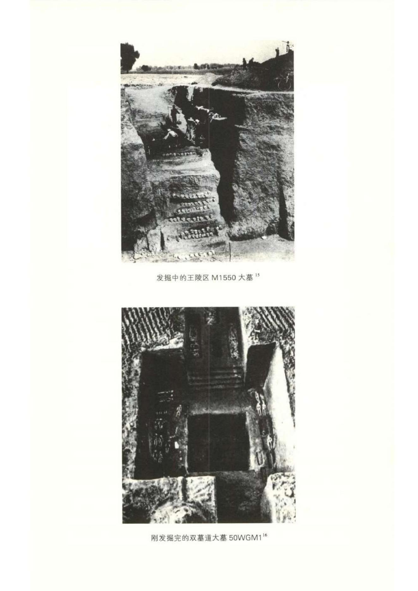
原书阅读器页 210原书物理 PDF 页 208印刷页 196
四，在稍晚的东西向祭祀坑中，人牲主要是青年女子和幼儿，大多被捆绑活埋，很多人保持着挣扎的姿势。少数坑也混杂被斩首的男子。个别坑以埋葬器物为主，如M229，埋有大小铜鼎两件，铜斗一件，陶器两件，以及两腿被绑、俯身活埋的幼童尸骨一具。
五，上述这些祭祀坑中，只有极少数有“随葬品”，主要是一些随身佩戴的小件玉饰，如玉簪和玉鱼，说明个别人牲并非赤贫的战俘或奴隶。其中，在八名有较高级饰物的人牲中，属于早期南北向坑的两座，晚期东西向坑的六座。这样看来，好像武丁朝后用相对有些身份和财产的女性献祭的现象增加了。但这种区别未必是祭祀礼仪的变化，毕竟1976年发掘区面积和样本有限，并不能代表总体情况。
六，经统计，这191座祭祀坑共埋有尸骨1178具，但这并不是完整数字，除了有些坑被破坏，还因1976年的发掘比较仓促，统计有疏漏。2013年，考古队再次挖开了当年发掘过的三座祭祀坑（M57、M58和M208），原报告中，这三座坑分别埋有六人、八人和七人，但经过重新核对，每座坑均埋有十人。[[fn:21]] 按照这种漏计比例，1976年发掘的尸骨总数会达到1683具，减去22座完全被破坏的坑，按169座统计（包含21座被局部破坏的），则平均每座坑内大约埋葬十名人牲。此外，王陵区有些地段还没有进行探查，而且很多坑已被农业活动平毁。1976年发掘时，考古队从村民中调查得知，以往该地棉田内时常挖出成堆掩埋的人头骨。这应当是无意中挖毁的祭祀坑。
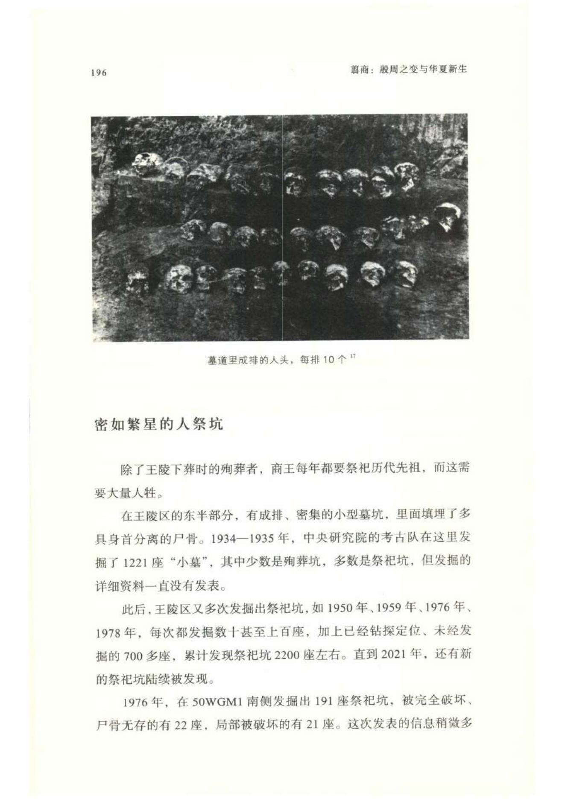
原书阅读器页 211原书物理 PDF 页 209印刷页 197
七，按位置和尺寸，1976年发掘的这191座祭祀坑可分为22组，每组代表一次单独的祭祀活动。坑数最多的一组有47座，最少的有一座。照此计算，则平均每次献祭挖坑8.7座。目前，王陵区已经发现祭祀坑约2200座，按上述规模计算，应当有253组，恰好和殷墟王陵区的使用时间接近，照此推测，王陵区大概平均每年会举行一次大型祭祀，并埋下一组祭祀坑，如此持续了约两百年。
王陵区祭祀坑内埋的并不都是人牲，还有少数“牲祭坑”。1978年，祭祀区南侧发掘出40座祭祀坑，其中，有30座埋马117匹，有五座各埋一人，还有五座埋的是各种家畜和兽类，除了猪狗牛羊，还有亚洲象、狐狸、猕猴和河狸。[[fn:22]] 牲祭坑排列严整，各种动物的摆放也非常整齐规范，甚至有种美感。其中，亚洲象很年幼，尚未长出门齿，背部有一枚铜铃，显然是人工养殖的。在它的前方坑角，摆放的是一头幼猪，大小相对，构图感很强。由此，我们可以合理推测，猪狗牛羊属于商王奉献给先祖的食物，马和各种野生动物是给先祖的生活用品和玩物。比如，1976年发掘的一座坑中，就埋有一人和五只鹰，这应当是把驯鹰师和鹰都献给了先王和先妣。
1. M26 2. M1 3. M39 4. M161 5. M6 6. M139
部分祭祀坑平面图（图）
1978年发掘的马坑和象坑[[fn:23]]（图）
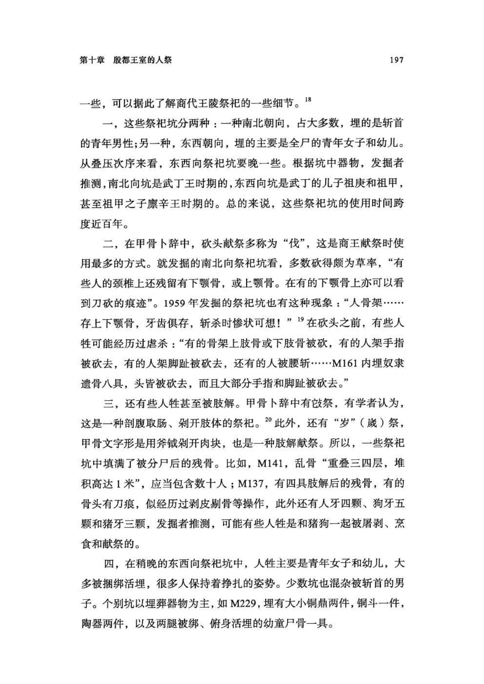
原书阅读器页 212原书物理 PDF 页 210印刷页 198
砍头的认真程度
王陵大约二十年左右增加一座，祭祀坑则每年都会增加。虽然王陵中的殉人和祭祀坑中的人牲大都被砍头，但这两者间还是存在着细微的区别。
如前所述，王陵墓穴中的人头骨多数连着几节颈椎骨，说明屠杀时有人专门负责拽住人牲的头发，使其脖子伸长受刃。
这种杀祭方式在甲骨文中有专门的字，除了“伐”，还有一个字：【奚戌】（xī；异体字，字形无法录入），写作（异体字）。学界普遍认为，该字象一人双手反缚，发辫直竖，一把斧钺正砍杀人头之形。[[fn:24]] 有些甲骨卜辞的【奚戌】，人头上方还会画一只手，写作6，表示砍头时有人用手拽着受刑人的头发。[[fn:25]]
把头发编成束状的用途很明确，显然是为了防止人牲缩脖子。伐是用普通的戈砍头，【奚戌】则是用尊贵的钺，所以砍头的过程也更认真，有可能是由王或王后等领袖人物亲自执行。
王陵墓道中摆放着比较完整的人头，以示对刚去世的先王的尊重。这是孝子的人之常情。至于每年向历代先祖的献祭，就没有这么讲究和投入了：祭祀坑中的无头尸身，往往连带着下颌骨甚至上颌骨，说明每年例行的祭祀的随意性更大。
殷商的王陵祭祀对男性人牲和殉人多用斩首，甚至肢解，而女性则多能保存全尸。这背后的宗教思维可能是：男性俘虏和奴隶具有反抗能力，砍头可以使其灵魂彻底驯服；相对而言，女性奴隶和战俘则缺少攻击性，甚至也有给男性先王和诸神充当性奴之用，自然需要保存全尸。当然，性别不全是区分用途的标准，无论男性还是女性人牲（殉人），都可能被肢解、剔剥，甚至烹饪加工。
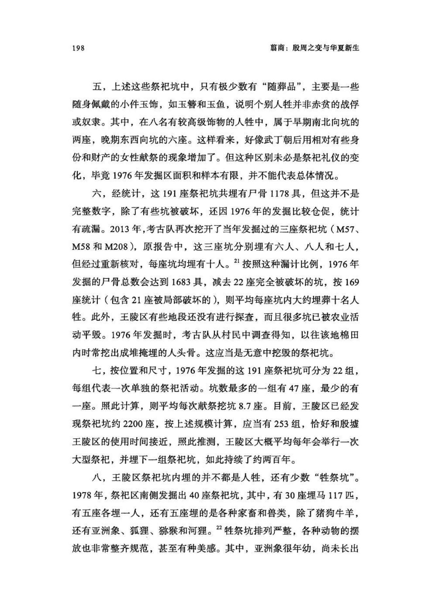
原书阅读器页 213原书物理 PDF 页 211印刷页 199
殷墟宫殿区发现近千名人牲，王陵区则有上万，这说明商王室献祭的主要场所是王陵区。而目前在早商的郑州商城和偃师商城以及中商的小双桥遗址尚未发现王陵区，这意味着它们的大规模献祭区可能还未被发现。
早商和中商宫殿区的献祭人牲，头骨经常被锐器戳出孔洞，但到殷商时期，这种现象已经很少见。这是祭祀方式的重要转变。
甲骨卜辞中记录的很多祭祀现象，在考古中还难以找到对应。比如，“沉”祭，是指把祭品投入河中，祈求河神的庇护，自然难以留下考古现场；还有用血或内脏献祭的字，但它们也不可能在地层中保留下来；几乎没有用马献祭的记录，但祭祀场中却有数以百计的马牲，这也是考古和卜辞不能对应的地方。
以上是商王室的人祭和人殉。而王室之下，还有为数众多的贵族，他们的人祭和人殉虽然不如王室集中，但分布范围更广，随时代升级的趋势也更加明显。
附录一：人髋骨占卜
从考古来看，在盘庚迁都前，殷地已是一座比较繁荣的商人聚落，不仅有随葬铜礼器的墓葬，还有超过200平方米的夯土建筑。
发现两座早于盘庚时期的庭院建筑（分别编号为F1和F2），其中，F1有奠基人七名，F2则至少有五名（发掘不完整）；主要是幼儿，超过一岁的，腿或下半身会被砍掉。F2东侧还有一座祭祀坑，里面有两具尸骨和一枚头骨，与散乱的红烧土块堆积在一起。[[fn:26]] 这是典型的商人宗教遗存，所以，对于盘庚朝廷来说，殷并非陌生的化外之地。
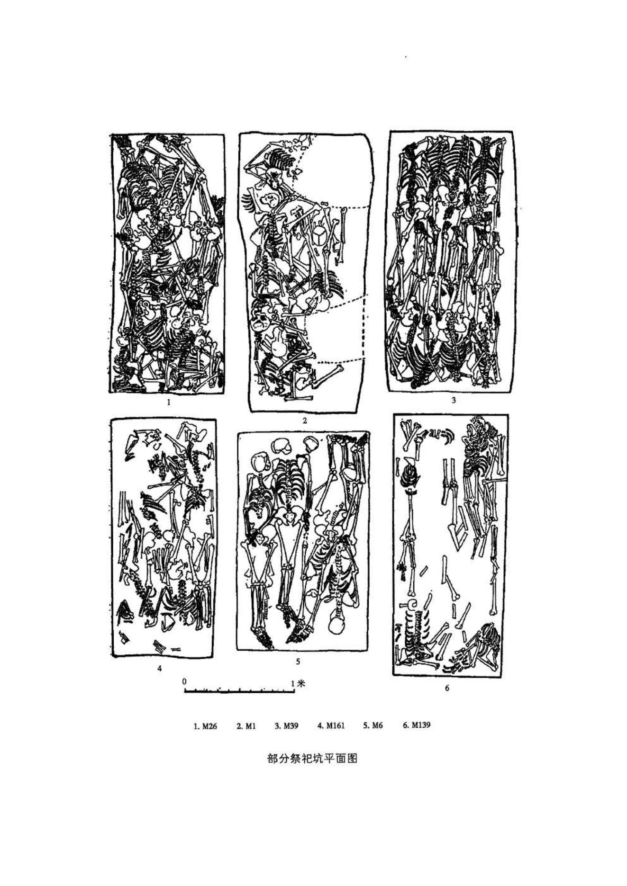
原书阅读器页 214原书物理 PDF 页 212印刷页 200
在殷都早期以及宫殿区从洹北迁到洹南的前后，商人似乎尝试过一些奇异的占卜方式。在洹南宫殿区南方1公里处的苗圃北地遗址，发掘出一些这个时期的灰坑，其中有各种动物和人的零碎骨头。一期的H19有大量占卜用牛肩胛骨和六块人髋骨残片，而且人髋骨被钻凿出圆坑和长方形坑，还有灼烫之后的裂纹。显然，这是操作者在尝试用人骨预测的准确性。
在H19及旁边的灰坑一共发现150多块人骨，大都是残碎的，有髋骨、臼骨、脊骨、肢骨、颅骨和颚骨等，占兽骨总量的十分之一。这片区域有可能是座骨器作坊，H19则是一位占卜师的工作地点，他应该就住在作坊旁边，以方便拣选、加工和实验各种骨头占卜的准确性。制骨的下脚料则被扔到了灰坑之中。人骨的预言效果似乎不如牛骨，所以并没有普及开来。再以后，商人用龟甲占卜的现象明显增多，这应当也是商人反复试错之后的收获。[[fn:27]]
殷墟苗圃北地的人髋骨卜骨碎片（图）[[fn:28]]
附录二：第一颗蒸锅人头
1984年，考古队又一次发掘了几座殷墟王陵区的墓葬，包括曾经被盗出过“司母戊方鼎”的M260——它可能是武丁王的一位夫人“妇妌”的墓。
这座大墓旁边，还有些相对较小的贵族墓葬。这些墓主应当是王室近亲，所以获准埋葬在王陵区。其中的M259，从地层和随葬器物看，属于殷墟二期，约在武丁王中晚年。
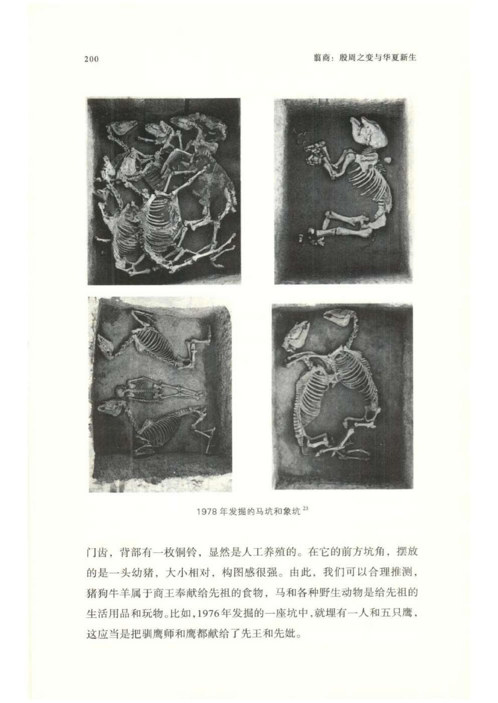
原书阅读器页 215原书物理 PDF 页 213印刷页 201
M259墓室内的二层台上有一具儿童尸骨，头被砍下，压在自己身下；沿着东西两侧的二层台，顺序摆放成年人头骨14枚，其中一枚盛放在铜甗（蒸锅）内，铜甗是躺倒的，局部被压扁，可能是木椁室塌陷所致；墓室脚端的二层台上有牛腿等食品。此外，墓穴填土过程中还杀了一人埋入。
人头骨所属的躯体不在墓穴内，可能因为墓穴面积有限，便在墓穴两侧各挖了一座坑：东侧坑埋无头骨架六具，西侧坑埋八具，正好和墓穴内的14枚头骨对应。[[fn:29]]
铜甗是蒸食物的炊器，里面的人头会不会是被作为食物蒸熟的？在当时，考古工作者从未想过这种可能性。直到十几年后，在另一座殷墟贵族墓葬也发现了铜甗人头组合，而且人头所属的躯体就在旁边，人们这才对商朝的人殉行为有了新的认识。
M259出土的铜甗和里面的人头（图）
附录三：甲骨卜辞中的献祭人数
胡厚宣先生根据甲骨卜辞统计过殷商诸王的献祭人数。他共找到有关人祭的甲骨1350片，卜辞1992条，合计共献祭13052人。此夕卜，还有1145条人祭卜辞未记载人数，即便按最少一人计算，甲骨卜辞记载的献祭总人数也会超过1.4万。
按卜辞所属时代划分，殷商各期的人祭数量是：
一，属于武丁王的人祭卜辞1060条，献祭9021人。另有531条卜辞没有记载人数。
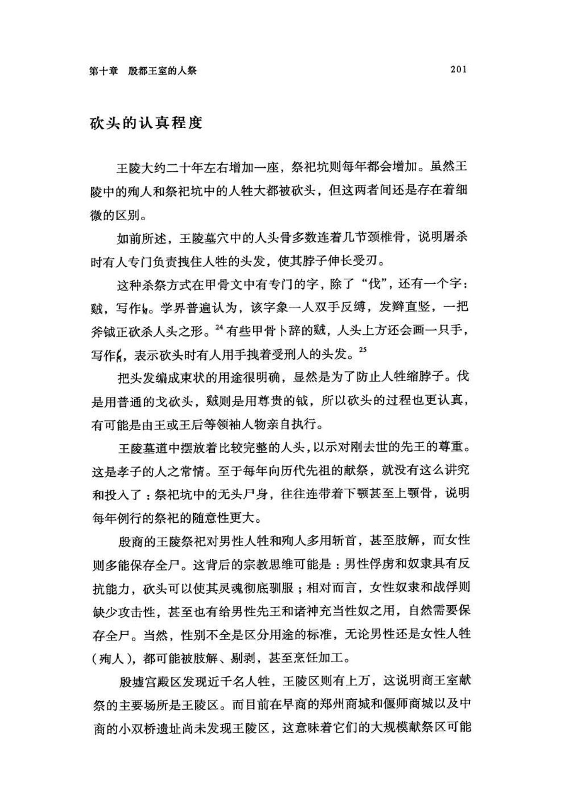
原书阅读器页 216原书物理 PDF 页 214印刷页 202
二，在武丁之子祖庚（第二十三王）和祖甲（第二十四王）期间，有人祭卜辞111条，献祭622人。另有57条卜辞未记载人数。
三，在凛辛（第二十五王）、康丁（第二十六王）、武乙（第二十七王）、文丁（第二十八王）期间，有人祭卜辞688条，献祭3205人。另有444条卜辞未记载人数。
四，在最晚期的帝乙（第二十九王）和帝辛（纣王，第三十王）期间，有人祭卜辞117条，献祭104人。另有56条卜辞未记载人数。[[fn:30]]
上述统计中，武丁王献祭的人数最多，占殷商诸王的69%；不过，这只是出土甲骨的样本，未必完全代表实际发生人祭的比例。最明显的是在祖甲、帝乙和帝辛时期，人祭卜辞数量很少，而这很可能是因为祭祀制度不同造成的。
在武丁等多数商王的时代，王的祭祀有较大的不确定性，每次献祭之前都要占卜询问献祭的方式和数量是否符合神灵的意旨，这自然会留下大量关于人牲的记录。但祖甲、帝乙和帝辛三王实行的是所谓的“周祭”，方法是按照天干顺序，为所有需要祭祀的先王和先妣制订一年周期的祭祀表，固定每次祭祀的时间和形式，所以卜辞中便不再记载献祭用人和动物的种类与数量。[[fn:31]] 关于“周祭”到底使用哪些和多少祭品，目前还没有准确的结论。
注释
1参见顾颉刚《尚书盘庚三篇校释释论》，《顾颉刚古史论文集》卷9，中华书局，2010年。
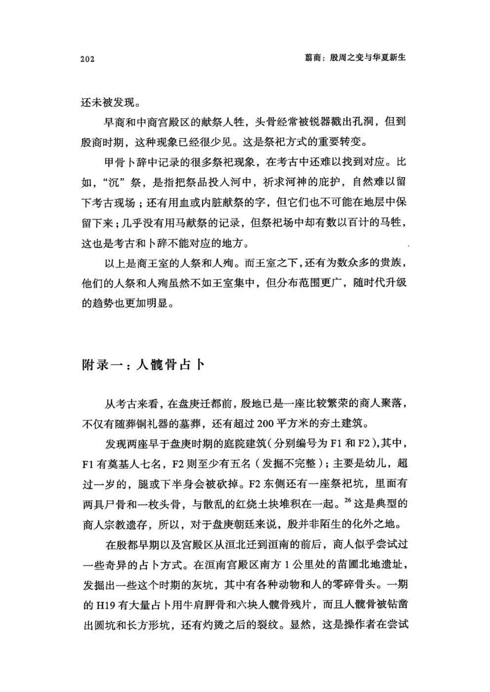
原书阅读器页 217原书物理 PDF 页 215印刷页 203
2朱彦民：《殷墟都城探论》，南开大学出版社，1999年，第100页。
3中国社科院考古所安阳工作队：《河南安阳市洹北商城宫殿区I号基址发掘
简报》，《考古》，2013年第5期。
4中国社科院考古所安阳工作队：《河南安阳市渔北商城宫殿区二号基址发掘
简报》，《考古》，2010年第1期。
5张国硕：《盘庚迁都来龙去脉之推断》，《郑州大学学报》（哲学社会科学版）
2004年第6期。
6中国社科院考古所安阳工作队：《河南安阳市洹北商城宫殿区I号基址发掘
简报》。
7中国社科院考古所：《中国考古学・夏商卷》。
8中国社科院考古所安阳队：《1987年安阳小屯村东北地的发掘》，《考古》
1989年第10期。
9中国社科院考古所：《殷墟的发现与研究》，科学出版社，2007年。石璋如：《北组墓葬》（1970年）、《中组墓葬》（1972年）、《南组墓葬附北组墓补遗》（1972年）、《乙区基址上下的墓葬》（1976年），均为（台北）“中研院”史语所出版。
10中国社科院考古所安阳工作队：《1973年小屯南地发掘报告》，《考古学集刊》第9集，科学出版社，1995年。
11石璋如：《殷墟建筑遗存》，（台北）“中研院”史语所，1959年；陈志达：《殷墟》，文物出版社，2007年。
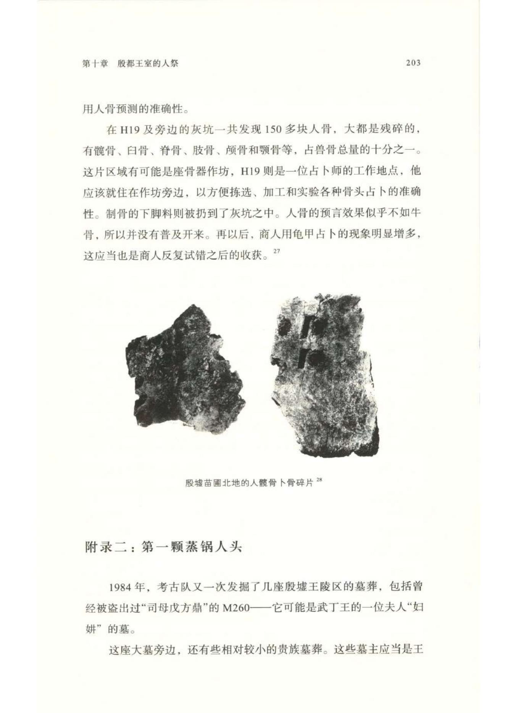
原书阅读器页 218原书物理 PDF 页 216印刷页 204
12中国社科院考古所：《殷墟的发现与研究》。
13梁思永、高去寻：《侯家庄T550号大墓》，（台北）“中研院”史语所，1976年，第25页。
14以上详见郭宝钧《1950年春殷墟发掘报告》，《中国考古学报》第五册，1951年。
15梁思永、高去寻：《侯家庄• 1550号大墓》。
16中国社会科学院考古研究所：《中国考古学・夏商卷》。墓穴中央挖有方形墓室（椁室），二层台上有大量殉人尸骨，这些尸骨在底片上进行了描色以便观察。
17图片来自“中研院”史语所。
18安阳亦工亦农文物考古短训班、中国社科院考古所安阳发掘队：《安阳殷墟奴隶祭祀坑的发掘》，《考古》1977年第1期。以下引用该报告的文字和图片不再单独注明出处。
19郭宝钧：《1950年春殷墟发掘报告》，第45页。
20王平、顾彬：《甲骨文与殷商人祭》，大象出版社，2007年，第88、97页。
21唐际根、汤毓赞：《再论殷墟人祭坑与甲骨文中羌祭卜辞的相关性》，《中原文物》2014年第3期。
22中国社科院考古所安阳工作队：《安阳武官村北地商代祭祀坑的发掘》，《考古》1987第12期。
23同上。
24于省吾先生认为，“奚”字“象人的顶部，发辫直竖，用手捉之”，而“【奚戌】是从戌奚声的形声字，系用斧钺以斫断奚头，是杀戮之意”。参见于省吾《殷代的奚奴》，《东北人民大学人文科学学报》1956年第1期；胡留元、冯卓慧《夏商西周法制史》，商务印书馆，2006年，第88页。
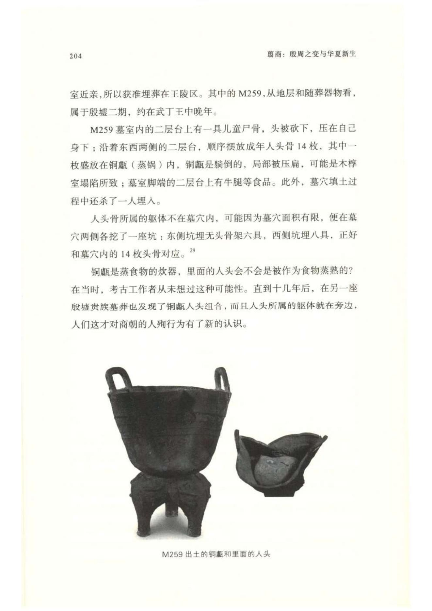
原书阅读器页 219原书物理 PDF 页 217印刷页 205
25姚孝遂：《商代的俘虏》，《古文字研究》第一辑，中华书局，1979年，第371页。中国社科院考古所安阳工作队：《1998年〜1999年安阳洹北商城花园庄东地发掘报告》，《考古学集刊》第15集，文物出版社，2004年。
26中国社科院考古所安阳工作队：《1982—1984年安阳苗圃北地殷代遗址的发掘》，《考古学报》1991年第1期。
27同上。
28同上。
29中国社科院考古所安阳工作队：《殷墟259、260号墓发掘报告》，《考古学报》1987年第1期。
30胡厚宣、胡振宇：《殷商史》，上海人民出版社，2003年，第165-166页。胡厚宣还划分出了武丁之前的三位商王盘庚、小乙和小辛的卜辞，也有少量人祭记录，共100人。但殷墟卜辞的时代划分尚未有公认的完整方案，有学者认为殷墟甲骨中没有早于武丁的，这些卜辞应属于武丁及之后。
31学者董作宾的《殷历谱》首先提出了祖甲、帝乙、帝辛时期的周祭现象，他称之为殷商的“新派宗教”。另参见常玉芝《商代宗教祭祀》，中国社会科学出版社，2010年，第427—467页。
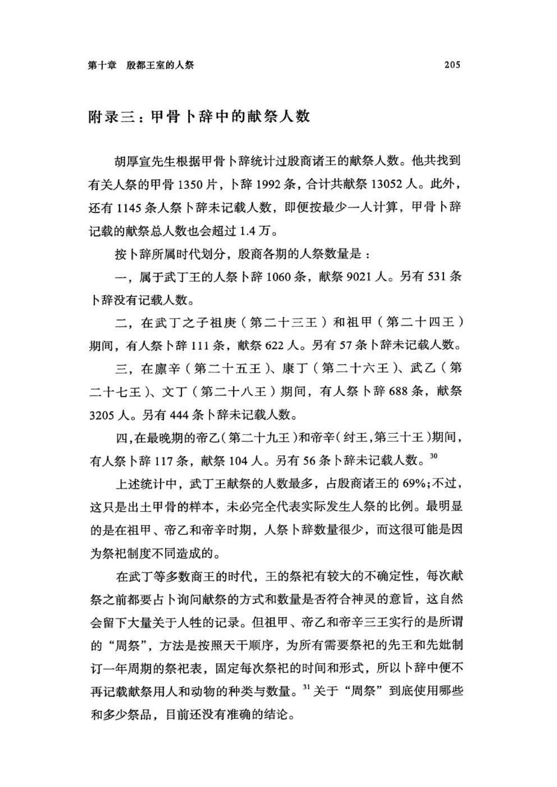
原书阅读器页 220原书物理 PDF 页 218印刷页 206
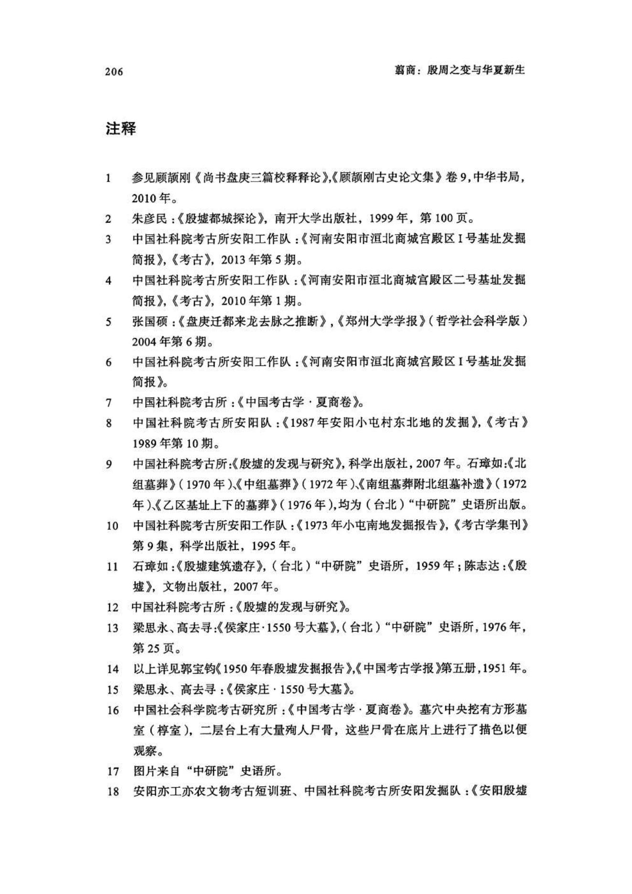
原书阅读器页 221原书物理 PDF 页 219印刷页 207
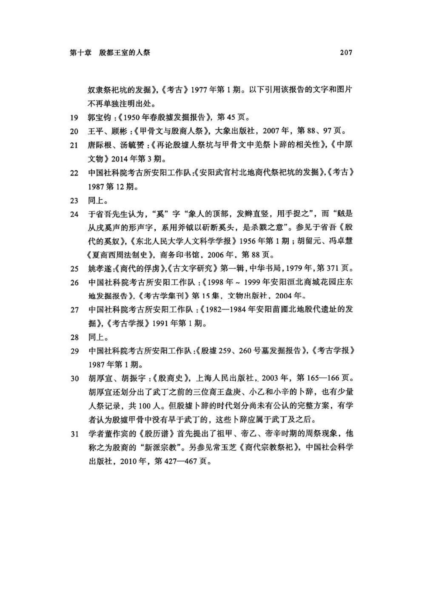
原书阅读器页 222原书物理 PDF 页 220印刷页 208
编辑札记
标记
先在正文中选择文字，再输入拼音；可用“拼音；简注”。